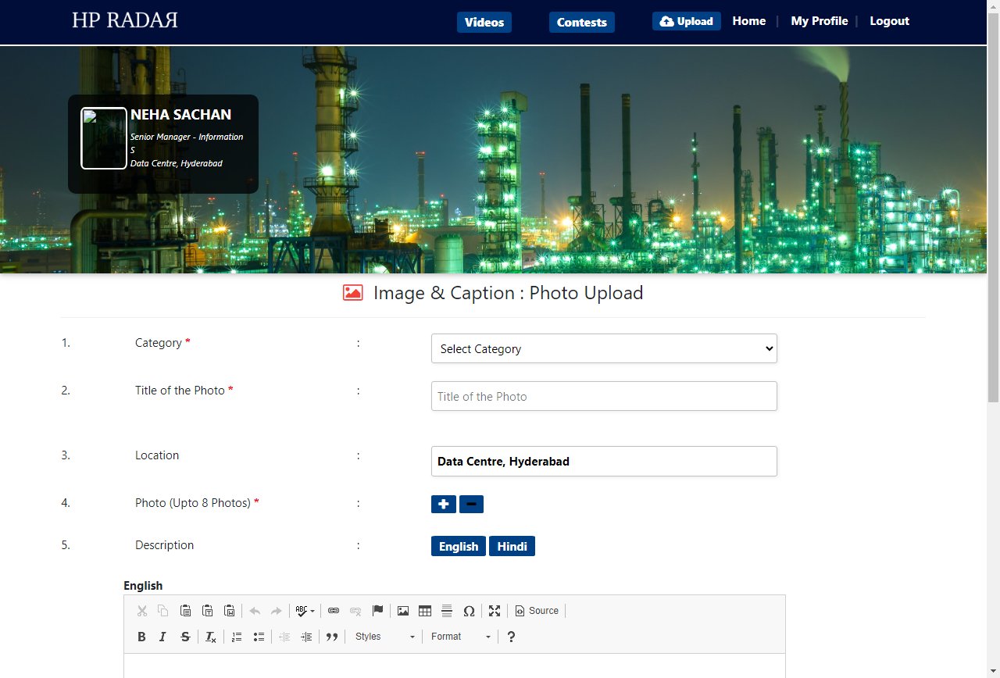
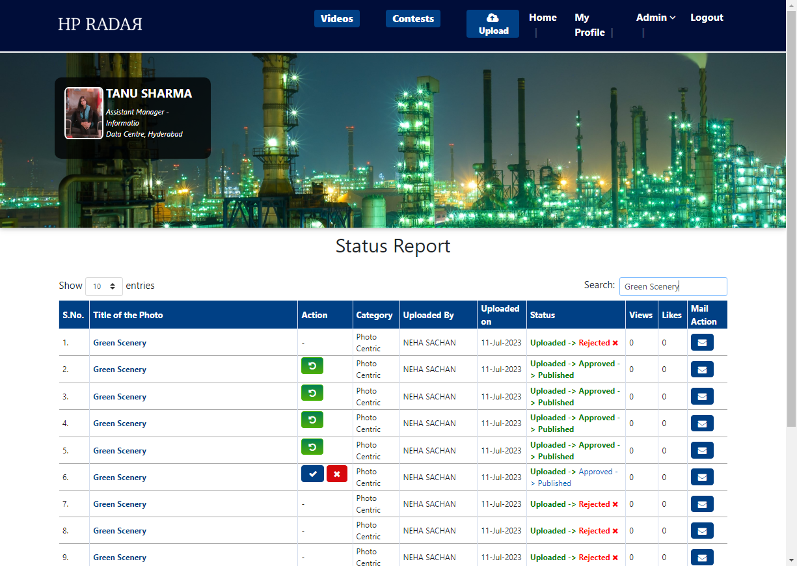
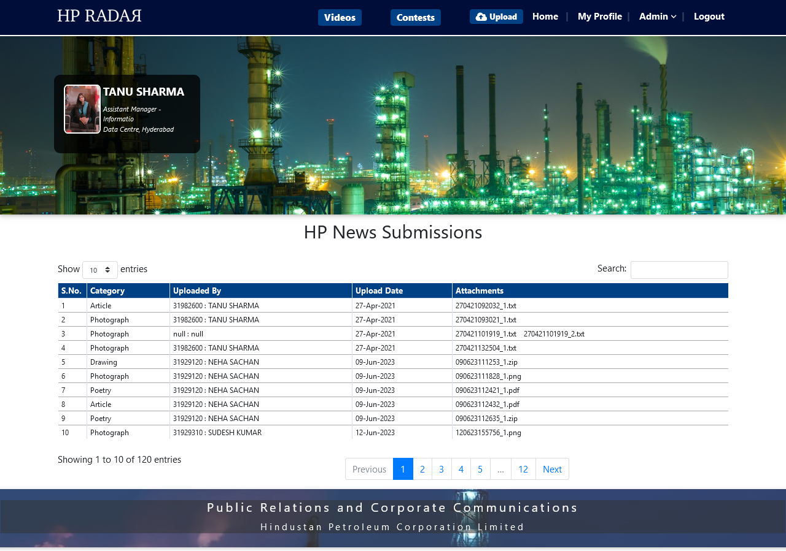
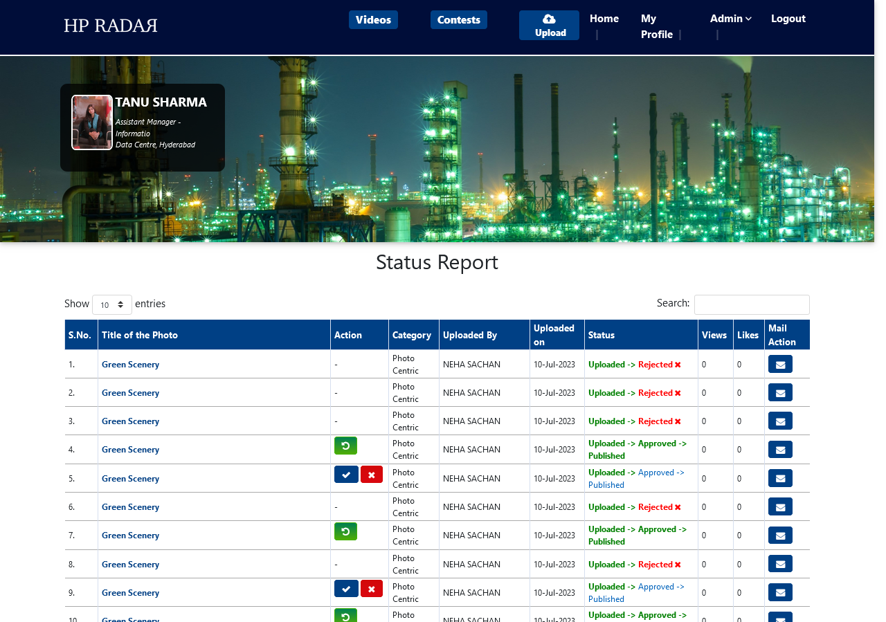
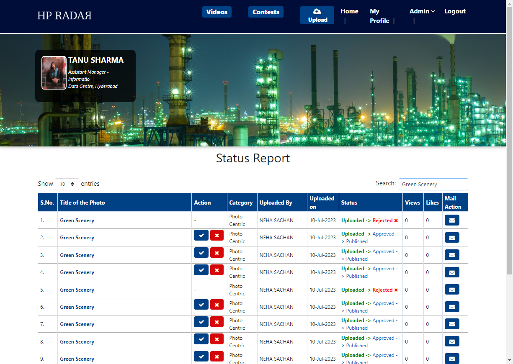

Started
Jul 10, 2023 12:28:26 pm
Ended
Jul 10, 2023 12:30:02 pm
Features Passed
3
Features Failed
3
Features
Scenarios
Steps
Timeline
Tags
| Name | Passed | Failed | Skipped | Others | Passed % |
|---|---|---|---|---|---|
| @Regression | 5 | 1 | 0 | 0 | 83.333% |
| @Upload_HpRadar_Post | 2 | 1 | 0 | 0 | 66.667% |
| @Admin_Rejected | 1 | 2 | 0 | 0 | 33.333% |
| @Upload_Hp_News | 3 | 0 | 0 | 0 | 100% |
| @User_Sanity | 5 | 1 | 0 | 0 | 83.333% |
| @Admin_Unpublished | 2 | 1 | 0 | 0 | 66.667% |
| @HP_Senior_League_Videos | 2 | 1 | 0 | 0 | 66.667% |
| @Admin_Sanituy | 9 | 6 | 0 | 0 | 60% |
| @Admin_Approved | 2 | 1 | 0 | 0 | 66.667% |
| @HP_News_Submission | 2 | 1 | 0 | 0 | 66.667% |
| @Sanity | 7 | 5 | 0 | 0 | 58.333% |
System/Environment
| Name | Value |
|---|---|
| Application-Name | HPCL-Radar |
| Browser-Name | Chrome |
| Environment | QA |
| Tester-Name | Kiran K |
| OS | Windows10 |
-
Verifying user able to Upload The HPCL post and HP News link
12:28:27 pm / 00:00:26:724 Fail
Verifying user able to Upload The HPCL post and HP News link
07.10.2023 12:28:27 pm 07.10.2023 12:28:53 pm 00:00:26:724 · #test-id=1PassVerifying Admin user able to unpublished the report successfullyGiven User is already logged into the application by giving email as "31982600" and password as "abcd"Then Admin able to move admin link and select the status report linkThen Admin enters the status as "Unpublish" and Selects the submit buttonThen Admin is able to check whether the report is unpublished successfullyFailVerifying Admin user able to Rejected the report is rejected successfullyGiven User is already logged into the application by giving email as "31982600" and password as "abcd"Then Admin able to move admin link and select the status report linkThen Admin enters the Status as "Rejected" and selects the submit buttonThen Admin is able to check whether the report is rejected successfullyStep skippedApplicationHooks.Hooks.tearDown(io.cucumber.java.Scenario)Verifying Admin user able to Rejected the report is rejected successfullyPassVerifying Admin user is able to upload HP Senior League Videos or notGiven User is already logged into the application by giving email as "31982600" and password as "abcd"When Admin is on HomePage and Select HP Senior League Videos linkWhen Admin is on HP Senior League PageThen User to select month as "January" and year as "2020"And User able to enter the employee name as "Sudesh kumar" and the Designation as "Sr. Manager"And Uesr able to enter the location as "Hyderabad" and enter the priority as "3"And user able to choose file and click on uploadThen User is able to see the alert messagePassVerifying Admin user able to approve and publish the postGiven User is already logged into the application by giving email as "31982600" and password as "abcd"When Admin is on HomePage and Select HP News Submission linkWhen Admin is on HP News Submissions report pageThen admin is able to see the HP News submitted by userPassVerifying Admin user able to approve and publish the postGiven User is already logged into the application by giving email as "31982600" and password as "abcd"Then Admin able to move admin link and select the status report linkThen Admin enters the status as "Approved" and selects the submit buttonThen Admin is able to check whether the report is approved and published -
Verifying user able to Upload The HPCL post and HP News link
12:28:27 pm / 00:00:24:413 Pass
Verifying user able to Upload The HPCL post and HP News link
07.10.2023 12:28:27 pm 07.10.2023 12:28:51 pm 00:00:24:413 · #test-id=5PassVerify user abel to upload HP Radar postGiven User is already logged into the application by giving email as "31929120" and password as "abcd"Given User is on HomePageThen User able to move upload link and select the HP_Radar PostThen User select the Category as "Activities" and enter the title of photo as "Green Scenery"Then User Abel to click on pluse button to upload the photo as "Scenery.jpg"Then User should select maximum eight photoThen User should enter the caption of the photo as "Scenery Image"Then User select the English or Hindi language and enter the correct text in the SearchBoxThen User able enter the employee name as "NEHA SACHAN" for tagging and select the chek boxThen User should able to upload the postPassVerify user abel to upload HP Radar NewsGiven User is already logged into the application by giving email as "31929120" and password as "abcd"Given User is on HomePageGiven User is on HomePageThen User able to select the HP_Radar NewsGiven Useris on HP_Radar NewsPageThen User select the Category as "Photograph"Then User able to Choose the file and Upload the the HP Radar News -
Verifying user able to Upload The HPCL post and HP News link
12:28:56 pm / 00:00:11:672 Pass
Verifying user able to Upload The HPCL post and HP News link
07.10.2023 12:28:56 pm 07.10.2023 12:29:08 pm 00:00:11:672 · #test-id=79PassVerifying Admin user able to unpublished the report successfullyGiven User is already logged into the application by giving email as "31982600" and password as "abcd"Then Admin able to move admin link and select the status report linkThen Admin enters the status as "Unpublish" and Selects the submit buttonThen Admin is able to check whether the report is unpublished successfullyPassVerifying Admin user able to approve and publish the postGiven User is already logged into the application by giving email as "31982600" and password as "abcd"Then Admin able to move admin link and select the status report linkThen Admin enters the status as "Approved" and selects the submit buttonThen Admin is able to check whether the report is approved and publishedPassVerifying Admin user able to Rejected the report is rejected successfullyGiven User is already logged into the application by giving email as "31982600" and password as "abcd"Then Admin able to move admin link and select the status report linkThen Admin enters the Status as "Rejected" and selects the submit buttonThen Admin is able to check whether the report is rejected successfullyPassVerifying Admin user able to approve and publish the postGiven User is already logged into the application by giving email as "31982600" and password as "abcd"When Admin is on HomePage and Select HP News Submission linkWhen Admin is on HP News Submissions report pageThen admin is able to see the HP News submitted by userPassVerifying Admin user is able to upload HP Senior League Videos or notGiven User is already logged into the application by giving email as "31982600" and password as "abcd"When Admin is on HomePage and Select HP Senior League Videos linkWhen Admin is on HP Senior League PageThen User to select month as "January" and year as "2020"And User able to enter the employee name as "Sudesh kumar" and the Designation as "Sr. Manager"And Uesr able to enter the location as "Hyderabad" and enter the priority as "3"And user able to choose file and click on uploadThen User is able to see the alert message -
Verifying user able to Upload The HPCL post and HP News link
12:28:56 pm / 00:00:19:981 Pass
Verifying user able to Upload The HPCL post and HP News link
07.10.2023 12:28:56 pm 07.10.2023 12:29:16 pm 00:00:19:981 · #test-id=86PassVerify user abel to upload HP Radar postGiven User is already logged into the application by giving email as "31929120" and password as "abcd"Given User is on HomePageThen User able to move upload link and select the HP_Radar PostThen User select the Category as "Activities" and enter the title of photo as "Green Scenery"Then User Abel to click on pluse button to upload the photo as "Scenery.jpg"Then User should select maximum eight photoThen User should enter the caption of the photo as "Scenery Image"Then User select the English or Hindi language and enter the correct text in the SearchBoxThen User able enter the employee name as "NEHA SACHAN" for tagging and select the chek boxThen User should able to upload the postPassVerify user abel to upload HP Radar NewsGiven User is already logged into the application by giving email as "31929120" and password as "abcd"Given User is on HomePageGiven User is on HomePageThen User able to select the HP_Radar NewsGiven Useris on HP_Radar NewsPageThen User select the Category as "Photograph"Then User able to Choose the file and Upload the the HP Radar News -
Verifying user able to Upload The HPCL post and HP News link
12:29:17 pm / 00:00:26:773 Fail
Verifying user able to Upload The HPCL post and HP News link
07.10.2023 12:29:17 pm 07.10.2023 12:29:44 pm 00:00:26:773 · #test-id=157FailVerifying Admin user able to Rejected the report is rejected successfullyGiven User is already logged into the application by giving email as "31982600" and password as "abcd"Then Admin able to move admin link and select the status report linkThen Admin enters the Status as "Rejected" and selects the submit buttonThen Admin is able to check whether the report is rejected successfullyStep skippedApplicationHooks.Hooks.tearDown(io.cucumber.java.Scenario)Verifying Admin user able to Rejected the report is rejected successfullyFailVerifying Admin user able to unpublished the report successfullyGiven User is already logged into the application by giving email as "31982600" and password as "abcd"Then Admin able to move admin link and select the status report linkThen Admin enters the status as "Unpublish" and Selects the submit buttonThen Admin is able to check whether the report is unpublished successfullyStep skippedApplicationHooks.Hooks.tearDown(io.cucumber.java.Scenario)Verifying Admin user able to unpublished the report successfullyFailVerifying Admin user able to approve and publish the postGiven User is already logged into the application by giving email as "31982600" and password as "abcd"Then Admin able to move admin link and select the status report linkThen Admin enters the status as "Approved" and selects the submit buttonThen Admin is able to check whether the report is approved and publishedStep skippedApplicationHooks.Hooks.tearDown(io.cucumber.java.Scenario)Verifying Admin user able to approve and publish the postFailVerifying Admin user able to approve and publish the postGiven User is already logged into the application by giving email as "31982600" and password as "abcd"When Admin is on HomePage and Select HP News Submission linkWhen Admin is on HP News Submissions report pageThen admin is able to see the HP News submitted by userStep skippedApplicationHooks.Hooks.tearDown(io.cucumber.java.Scenario)Verifying Admin user able to approve and publish the postFailVerifying Admin user is able to upload HP Senior League Videos or notGiven User is already logged into the application by giving email as "31982600" and password as "abcd"When Admin is on HomePage and Select HP Senior League Videos linkWhen Admin is on HP Senior League PageThen User to select month as "January" and year as "2020"Step skippedAnd User able to enter the employee name as "Sudesh kumar" and the Designation as "Sr. Manager"Step skippedAnd Uesr able to enter the location as "Hyderabad" and enter the priority as "3"Step skippedAnd user able to choose file and click on uploadStep skippedThen User is able to see the alert messageStep skippedApplicationHooks.Hooks.tearDown(io.cucumber.java.Scenario)Verifying Admin user is able to upload HP Senior League Videos or not -
Verifying user able to Upload The HPCL post and HP News link
12:29:17 pm / 00:00:45:040 Fail
Verifying user able to Upload The HPCL post and HP News link
07.10.2023 12:29:17 pm 07.10.2023 12:30:02 pm 00:00:45:040 · #test-id=170FailVerify user abel to upload HP Radar postGiven User is already logged into the application by giving email as "31929120" and password as "abcd"Given User is on HomePageThen User able to move upload link and select the HP_Radar PostThen User select the Category as "Activities" and enter the title of photo as "Green Scenery"Then User Abel to click on pluse button to upload the photo as "Scenery.jpg"Then User should select maximum eight photoThen User should enter the caption of the photo as "Scenery Image"Then User select the English or Hindi language and enter the correct text in the SearchBoxThen User able enter the employee name as "NEHA SACHAN" for tagging and select the chek boxThen User should able to upload the postApplicationHooks.Hooks.tearDown(io.cucumber.java.Scenario)Verify user abel to upload HP Radar postPassVerify user abel to upload HP Radar NewsGiven User is already logged into the application by giving email as "31929120" and password as "abcd"Given User is on HomePageGiven User is on HomePageThen User able to select the HP_Radar NewsGiven Useris on HP_Radar NewsPageThen User select the Category as "Photograph"Then User able to Choose the file and Upload the the HP Radar News
-
org.openqa.selenium.interactions.MoveTargetOutOfBoundsException
1 tests
org.openqa.selenium.interactions.MoveTargetOutOfBoundsException
1 failedStatus Timestamp TestName Fail 12:29:49 pm Then User should able to upload the post Verifying user able to Upload The HPCL post and HP News link.Verify user abel to upload HP Radar post.Then User should able to upload the post -
org.openqa.selenium.NoSuchElementException
6 tests
org.openqa.selenium.NoSuchElementException
6 failedStatus Timestamp TestName Fail 12:28:38 pm Then Admin enters the Status as "Rejected" and selects the submit button Verifying user able to Upload The HPCL post and HP News link.Verifying Admin user able to Rejected the report is rejected successfully.Then Admin enters the Status as "Rejected" and selects the submit buttonFail 12:29:24 pm Then Admin enters the Status as "Rejected" and selects the submit button Verifying user able to Upload The HPCL post and HP News link.Verifying Admin user able to Rejected the report is rejected successfully.Then Admin enters the Status as "Rejected" and selects the submit buttonFail 12:29:25 pm Then Admin enters the status as "Approved" and selects the submit button Verifying user able to Upload The HPCL post and HP News link.Verifying Admin user able to approve and publish the post.Then Admin enters the status as "Approved" and selects the submit buttonFail 12:29:25 pm When Admin is on HP Senior League Page Verifying user able to Upload The HPCL post and HP News link.Verifying Admin user is able to upload HP Senior League Videos or not.When Admin is on HP Senior League PageFail 12:29:27 pm When Admin is on HP News Submissions report page Verifying user able to Upload The HPCL post and HP News link.Verifying Admin user able to approve and publish the post.When Admin is on HP News Submissions report pageFail 12:29:28 pm Then Admin enters the status as "Unpublish" and Selects the submit button Verifying user able to Upload The HPCL post and HP News link.Verifying Admin user able to unpublished the report successfully.Then Admin enters the status as "Unpublish" and Selects the submit button